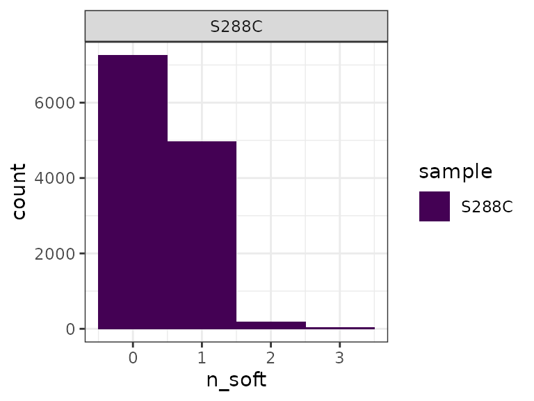
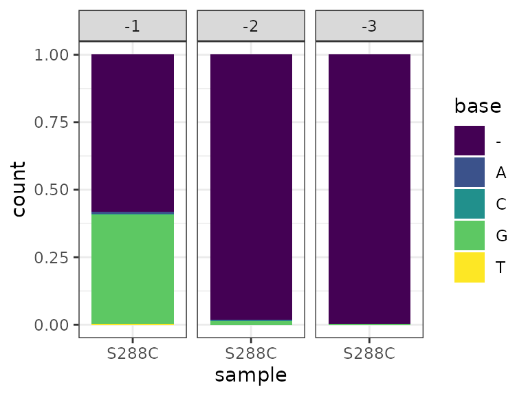

BAM_PROCESSING.RmdIn addition to accepting TSSs and/or TSRs in a variety of formats, TSRexploreR can import and process alignment BAM files. Any method-specific sequences present in the reads (for instance, the 8-bp UMI and TATAGGG spacer sequence present in the R1 reads of STRIPE-seq datasets) should be trimmed prior to import. Here, we illustrate BAM processing using a small example alignment of paired-end S. cerevisiae STRIPE-seq data to the sacCer3 genome assembly.
library("TSRexploreR")
library("ggplot2")
# Load example BAM file
bam_file <- system.file("extdata", "S288C.bam", package="TSRexploreR")
# # Load genome assembly
assembly <- system.file("extdata", "S288C_Assembly.fasta", package="TSRexploreR")
# Generate sample sheet
samples <- data.frame(sample_name="S288C", file_1=bam_file, file_2=NA)
# Create the TSRexploreR object
exp <- tsr_explorer(sample_sheet=samples, genome_assembly=assembly)Several filtering options based on BAM flags are available for BAM processing during import. For both single- and paired-end alignments, secondary alignments can be removed. For paired-end datasets (including this example), improperly paired reads and duplicate pairs can be removed.
exp <- import_bams(exp, paired=TRUE, proper_pair=TRUE, remove_duplicate=TRUE, remove_secondary=TRUE)A frequent observation in TSS mapping protocols is the presence of spurious, non-templated nucleotides at the 5’ end of the R1 read (Carninci et al. 2006). Addition of a single non-templated G, likely templated by the 7-methylguanosine cap (Wulf et al. 2019), is particularly prevalent. If these spurious bases are not incidentally aligned to the genome, they are soft-clipped. TSRexploreR provides two plots for assessment of soft-clipped bases.
First, a plot of the number of reads with certain numbers of soft-clipped bases can be generated. From this, we can see that most reads that were soft-clipped during alignment have a single such base. By default, reads with >3 soft-clipped bases are removed during BAM import.
softclip_histogram(exp) +
theme_bw() +
scale_fill_viridis_d()
A plot of base frequency at each soft-clipped position can also be generated. Consistent with previous reports, the majority of soft-clipped bases are G, corresponding to a C on the first-strand cDNA that was presumably templated by the cap.
softclip_composition(exp) +
theme_bw() +
scale_fill_viridis_d()
Soft-clipping indicates spurious nucleotide addition at the 5’ end of R1 reads when these bases are not templated to the genome; however, in many cases, such bases may fortuitously match the genome during alignment. Due to the uncertainty of the origin of these bases in reads (reverse transcription of the cap versus a legitimate genomic TSS), TSRexploreR uses a probabilistic approach for their removal. First, the frequency of R1 reads with a soft-clipped G is determined. For each R1 read with a non-soft-clipped 5’ G, a Bernoulli trial is conducted, using the previously determined soft-clipped G frequency as the “success” probability (considered to be the chance that the G will be removed).
exp <- G_correction(exp)Following BAM processing, overlapping R1 read 5’ ends are aggregated into TSSs and stored in a GRanges object within the TSRexploreR object at exp@experiment$TSSs.
exp <- tss_aggregate(exp)